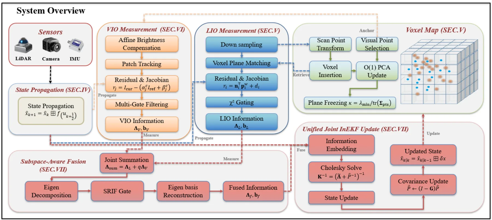
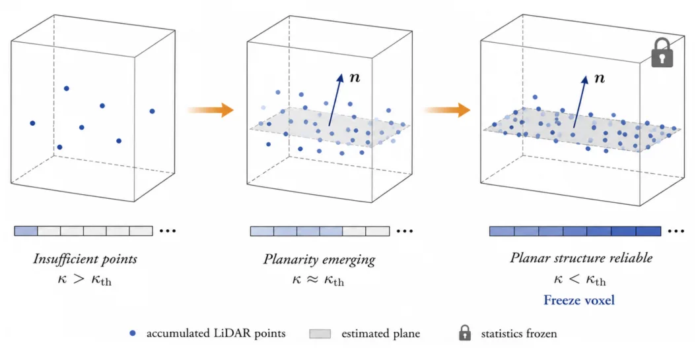
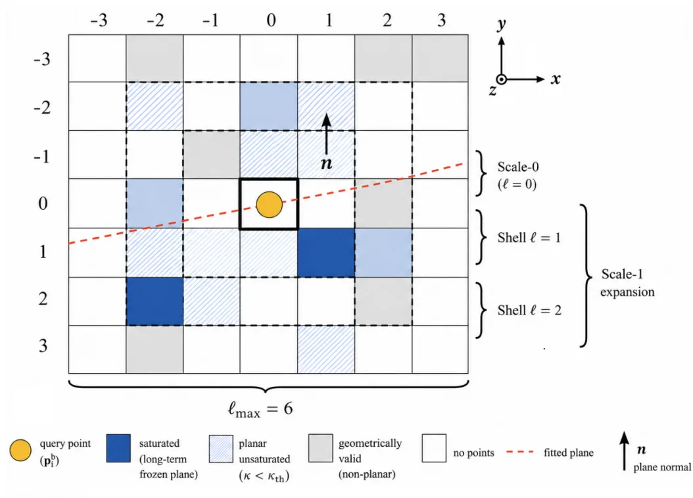
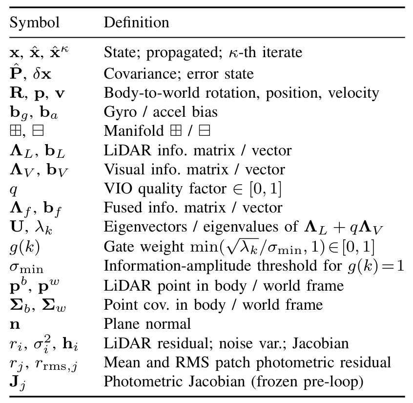

SA-LIVO：带子空间感知退化处理的高效 LiDAR-惯性-视觉里程计SA-LIVO: Efficient LiDAR-Inertial-Visual Odometry with Subspace-Aware Degeneracy Handling
直接命中 LiDAR/视觉/惯性紧耦合定位中的退化处理痛点，方法从 modality-level gating 细化到 eigendirection-level fusion，并报告 CPU/ARM 实时性能；后续需复核阈值敏感性、基线公平性和代码开源进度。
一句话工作总结
按信息矩阵特征方向选择性融合视觉约束，让视觉主要补偿 LiDAR 退化方向，在 InEKF LIVO 中提升鲁棒性并降低计算/内存开销。
摘要
紧耦合 LiDAR-视觉-惯性里程计虽然能结合 LiDAR 的几何深度与视觉观测，但两类外感传感器有不同失效模式：LiDAR 在几何欠约束方向退化，视觉在光照差或缺纹理时退化。SA-LIVO 提出 Subspace-Aware Information Fusion，对联合 LiDAR-visual 信息矩阵做特征分解，并在每个特征方向用线性夹紧软门控抑制退化方向、保留可观测方向。LiDAR 与视觉残差随后在共享线性化点的 InEKF 循环中联合优化；由于视觉信息只在 LiDAR 不足方向补偿，光度 Jacobian 可在迭代前一次组装并复用，从而降低计算和内存开销。作者在 HILTI'22、New College、Oxford Spires 等 29 个序列和并发退化场景上报告了竞争性精度、稳定漂移、12.3 ms/frame laptop CPU 与 26.8 ms/frame embedded ARM 的运行速度，且峰值内存低 3.6–6.3 倍。
Tightly coupled LiDAR-visual-inertial odometry (LIVO) fuses precise geometric depth with complementary visual measurements, yet its exteroceptive sensors face independent failure modes: LiDAR degenerates when scan geometry is under-constrained, while visual measurements degrade under adverse illumination or texture absence. Existing countermeasures, including binary degeneracy detection, covariance inflation, and scene-level quality gating, operate at the modality level and leave the direction-dependent structure of the joint information matrix unaddressed. Consequently, visual residuals enter pose directions where LiDAR is well-constrained, while in deficient directions visual compensation disperses across the full state space rather than concentrating where needed. We propose SA-LIVO, a LiDAR-inertial-visual odometry system addressing these limitations through direction-selective fusion and information-efficient processing. The Subspace-Aware Information Fusion (SAIF) framework eigendecomposes the joint LiDAR-visual information matrix and applies a linear-clamp soft gate per eigendirection, attenuating degenerate directions while preserving observable ones at full strength. LiDAR and visual residuals are then jointly optimized in one InEKF loop at a shared linearization point. Since visual information contributes only where LiDAR is deficient, photometric Jacobians are assembled once before the loop and reused across iterations, avoiding the per-iteration cost of conventional iterated filters. Experiments on 29 sequences from three benchmarks (HILTI'22, New College, Oxford Spires) and concurrent-degradation scenarios show accuracy competitive with the strongest baselines and bounded drift where competing systems diverge. SA-LIVO averages 12.3 ms per frame on a laptop CPU and 26.8 ms on an embedded ARM board without GPU, with 3.6-6.3x lower peak memory. The code will be open-sourced.
中文解读摘录
- 英文题名：SA-LIVO: Efficient LiDAR-Inertial-Visual Odometry with Subspace-Aware Degeneracy Handling
- 作者：Yinong Cao, Xin He, Yuwei Chen, Shijie Liu, Chunlai Li, Jianyu Wang
- 类别/来源：cs.RO；20 pages, 12 figures, 5 tables；采集 score=15；阅读优先级=9.2/10。
- 一句话总结：在同一个 InEKF 优化环内对 LiDAR-visual 信息矩阵做特征分解，按可观测方向选择性融合视觉约束，让视觉主要补偿 LiDAR 退化方向而不干扰已约束方向。
- 为什么值得看：这篇非常贴近实际 LIVO 系统痛点：LiDAR 在走廊、平面、重复结构中退化，视觉又会受光照/纹理影响。SAIF 的“按 eigendirection 线性夹紧软门控”比传统 modality-level gating 更细粒度；摘要还声称视觉 Jacobian 可在迭代外复用，带来 12.3 ms/frame laptop CPU、26.8 ms/frame embedded ARM 且峰值内存降低 3.6–6.3x。后续应重点复核退化方向判定阈值、和 FAST-LIO/LIO-SAM/视觉直接法基线的公平性，以及代码开源进度。
- 标签：LIVO、LiDAR 退化、子空间融合、InEKF
- 链接：abs / PDF
图表/页面预览

{kind=link}

{kind=link}

{kind=link}

{kind=link}
